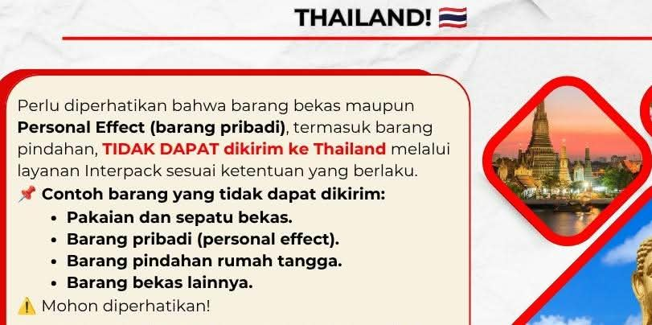

Barang Bekas, Personal Effect dan Barang Pindahan Dilarang Dikirim ke Thailand via Interpack

Bagi pelanggan yang ingin mengirim paket dari Indonesia ke Thailand, penting untuk mengetahui jenis barang yang diperbolehkan dan barang yang tidak dapat dikirim menggunakan layanan pengiriman internasional. Setiap negara tujuan memiliki ketentuan tersendiri mengenai barang yang masuk ke wilayahnya, termasuk aturan yang berlaku pada layanan pengiriman tertentu.
Berdasarkan pemberitahuan mengenai pengiriman ke Thailand melalui layanan Interpack, barang bekas maupun Personal Effect (barang pribadi), termasuk barang pindahan, tidak dapat dikirim ke Thailand melalui layanan tersebut sesuai ketentuan yang berlaku.
Larangan ini perlu diperhatikan oleh pelanggan sebelum melakukan packing paket, terutama bagi orang yang ingin mengirim pakaian bekas, sepatu bekas, barang yang pernah digunakan sehari-hari, atau barang-barang rumah tangga dari Indonesia ke Thailand.
1. Apa yang Dimaksud Barang Bekas dan Personal Effect?
Barang bekas adalah barang yang sebelumnya sudah pernah digunakan, baik untuk keperluan pribadi maupun rumah tangga. Sementara itu, personal effect merupakan istilah yang umumnya digunakan untuk menyebut barang-barang milik pribadi seseorang yang digunakan dalam kehidupan sehari-hari.
Dalam pengiriman internasional, barang pribadi sering kali berkaitan dengan barang yang dibawa atau dikirim seseorang untuk kebutuhan pemakaian sendiri. Namun, tidak semua barang pribadi atau barang bekas dapat diterima oleh layanan pengiriman ke setiap negara.
Pada pemberitahuan untuk tujuan Thailand ini, barang bekas, personal effect dan barang pindahan termasuk dalam kategori yang tidak dapat dikirim melalui layanan Interpack.
2. Contoh Barang Bekas yang Tidak Dapat Dikirim ke Thailand
Agar lebih mudah dipahami, berikut beberapa contoh barang yang termasuk dalam kategori barang bekas sebagaimana dijelaskan dalam pemberitahuan tersebut.
Pakaian Bekas
Pakaian yang sebelumnya telah digunakan dan akan dikirim kepada keluarga, teman, kerabat, maupun penerima lainnya termasuk contoh barang bekas yang perlu diperhatikan.
Contohnya:
- Baju bekas pemakaian pribadi.
- Celana jeans atau celana panjang bekas.
- Jaket yang sudah pernah digunakan.
- Koleksi pakaian lama yang ingin dikirim ke kerabat.
- Pakaian bekas yang dikumpulkan dalam satu kardus.
Walaupun pakaian tersebut masih bersih, layak pakai, atau memiliki kondisi yang bagus, statusnya tetap merupakan barang yang sudah pernah digunakan. Karena itu, pelanggan tidak sebaiknya menganggap pakaian bekas dapat dikirim hanya karena kondisinya masih baik.
Sepatu Bekas
Sepatu yang telah digunakan juga termasuk contoh barang bekas yang disebutkan dalam pemberitahuan.
Contoh sepatu bekas antara lain:
- Sepatu olahraga yang pernah dipakai.
- Sandal bekas pemakaian sehari-hari.
- Sepatu kerja lama.
- Sepatu koleksi pribadi yang sudah pernah digunakan.
Mengirim sepatu bekas kepada orang lain di Thailand, meskipun masih dalam kondisi bagus atau sudah dibersihkan, tetap perlu memperhatikan ketentuan layanan yang berlaku.
3. Barang Pribadi atau Personal Effect
Personal effect atau barang pribadi merupakan barang yang dimiliki dan digunakan seseorang untuk keperluan pribadi. Barang seperti ini biasanya berkaitan dengan aktivitas sehari-hari, kebutuhan individu, maupun perlengkapan yang dimiliki seseorang.
Contoh barang yang sering dianggap sebagai personal effect dalam kehidupan sehari-hari antara lain:
- Barang-barang pribadi yang sudah pernah digunakan.
- Koleksi perlengkapan pribadi lama.
- Barang yang biasa digunakan dalam aktivitas sehari-hari.
- Perlengkapan milik seseorang yang dikirim karena pindah tempat.
Perlu dipahami bahwa istilah barang pribadi tidak otomatis berarti barang tersebut boleh dikirim melalui semua layanan internasional. Barang pribadi yang sudah digunakan tetap perlu memperhatikan pembatasan berdasarkan negara tujuan dan jenis layanan.
4. Barang Pindahan Rumah Tangga Tidak Dapat Dikirim
Selain pakaian bekas dan personal effect, barang pindahan rumah tangga juga termasuk dalam kategori yang tidak dapat dikirim ke Thailand melalui layanan Interpack sesuai pemberitahuan.
Barang pindahan biasanya merupakan kumpulan barang yang dimiliki seseorang ketika berpindah tempat tinggal. Barang-barang tersebut dapat terdiri dari perlengkapan rumah, barang pribadi, peralatan yang pernah digunakan, hingga benda-benda yang disimpan selama bertahun-tahun.
Contoh barang pindahan rumah tangga:
- Peralatan rumah tangga bekas.
- Perlengkapan dapur yang sudah digunakan.
- Barang dekorasi rumah lama.
- Koleksi barang rumah tangga pribadi.
- Kardus berisi campuran barang-barang bekas rumah.
Pengiriman barang pindahan berbeda dengan pengiriman paket biasa. Jika pelanggan berencana memindahkan barang dari Indonesia ke Thailand, sebaiknya tidak langsung mengemas barang dan menyerahkannya untuk pengiriman sebelum memastikan apakah jenis barang dan layanan yang digunakan memang menerima pengiriman tersebut.
5. Bagaimana Jika Barang Bekas Masih Bagus dan Layak Pakai?
Salah satu pertanyaan yang sering muncul adalah apakah barang bekas tetap dilarang jika kondisinya masih sangat bagus, tidak rusak, bersih, atau masih memiliki nilai jual.
Kondisi fisik barang tidak selalu menentukan apakah barang tersebut dapat dikirim. Barang yang masih berfungsi dengan baik tetap merupakan barang bekas apabila sebelumnya sudah pernah digunakan.
Sebagai contoh, seseorang ingin mengirim jaket bekas kepada saudaranya di Thailand. Jaket tersebut masih bagus, tidak sobek, sudah dicuci, dan masih nyaman digunakan. Meskipun demikian, jaket tersebut tetap termasuk pakaian bekas.
Hal yang sama berlaku untuk sepatu, perlengkapan pribadi, maupun barang rumah tangga yang sebelumnya telah digunakan. Pelanggan sebaiknya tidak menjadikan kondisi barang sebagai alasan untuk menganggap barang tersebut otomatis dapat diterima.
6. Contoh Kasus Pengiriman Barang ke Thailand
Contoh 1: Mengirim Pakaian Bekas kepada Keluarga
Seorang pelanggan di Bandung ingin mengirim beberapa baju yang sudah tidak digunakan kepada anggota keluarga yang tinggal di Thailand. Baju tersebut masih layak pakai dan jumlahnya hanya beberapa potong.
Meskipun tujuannya untuk diberikan kepada keluarga dan bukan untuk dijual, barang tersebut tetap termasuk pakaian bekas. Berdasarkan pemberitahuan layanan Interpack untuk Thailand, jenis barang tersebut tidak dapat dikirim melalui layanan ini.
Contoh 2: Mengirim Sepatu Lama yang Masih Layak
Pelanggan ingin mengirim sepasang sepatu olahraga lama yang masih bagus kepada temannya di Bangkok. Sepatu sudah dibersihkan dan dimasukkan ke dalam kotak agar aman selama perjalanan.
Sepatu tersebut tetap tergolong sepatu bekas karena sudah pernah digunakan. Oleh karena itu, pelanggan perlu memperhatikan pemberitahuan larangan pengiriman barang bekas ke Thailand.
Contoh 3: Mengirim Barang saat Pindah Rumah
Seseorang akan pindah tempat tinggal ke Thailand dan ingin mengirim beberapa kardus berisi perlengkapan rumah, pakaian lama, peralatan dapur, serta barang-barang yang selama ini digunakan.
Paket seperti ini termasuk barang pindahan rumah tangga atau personal effect. Berdasarkan pemberitahuan yang ditampilkan, barang pindahan termasuk kategori yang tidak dapat dikirim ke Thailand melalui layanan Interpack.
Contoh 4: Mengirim Barang Bekas untuk Dijual
Seorang penjual ingin mengirim barang bekas yang masih layak pakai kepada pembeli di Thailand. Walaupun transaksi dilakukan secara online dan barang memiliki nilai jual, barang tersebut tetap merupakan barang bekas.
Pelanggan tidak boleh menganggap barang bekas untuk tujuan komersial otomatis diperbolehkan. Ketentuan mengenai barang bekas tetap harus diperhatikan sebelum pengiriman dilakukan.
7. Apakah Barang Baru Boleh Dikirim ke Thailand?
Pemberitahuan pada gambar secara khusus menjelaskan larangan barang bekas, personal effect, barang pindahan, dan barang bekas lainnya. Hal tersebut tidak berarti seluruh barang baru otomatis dapat dikirim ke Thailand.
Barang baru tetap dapat memiliki ketentuan tersendiri, tergantung jenis barang, bahan, fungsi, jumlah, dokumen, peraturan negara tujuan, dan ketentuan layanan yang digunakan.
Contohnya, sebelum mengirim barang baru pelanggan tetap perlu memastikan:
- Jenis barang dapat diterima di Thailand.
- Barang bukan termasuk barang yang dibatasi atau dilarang.
- Barang tidak mengandung komponen yang membutuhkan penanganan khusus.
- Dokumen pengiriman dan informasi barang sesuai dengan kondisi sebenarnya.
- Layanan pengiriman yang dipilih menerima jenis barang tersebut.
Oleh karena itu, untuk barang baru sekalipun, sebaiknya lakukan pengecekan terlebih dahulu sebelum paket diserahkan kepada agen.
8. Mengapa Pelanggan Perlu Memeriksa Barang Sebelum Packing?
Memeriksa barang sebelum packing merupakan langkah penting dalam pengiriman internasional. Hal ini membantu pelanggan mengetahui apakah barang yang akan dikirim sesuai dengan ketentuan layanan dan negara tujuan.
Beberapa manfaat memeriksa barang sebelum packing antara lain:
- Menghindari paket yang tidak dapat diproses. Pelanggan dapat mengetahui lebih awal apabila barang termasuk kategori yang tidak diterima.
- Mengurangi risiko kendala pengiriman. Pemeriksaan awal membantu menghindari masalah setelah paket masuk ke proses pengiriman internasional.
- Menghindari packing ulang. Barang yang tidak sesuai ketentuan dapat membuat pelanggan harus membuka kembali paket dan mengatur ulang isi kiriman.
- Mempermudah proses konsultasi. Informasi barang yang jelas membantu petugas memberikan penjelasan sesuai ketentuan yang berlaku.
9. Apa yang Harus Dilakukan Jika Ingin Mengirim Barang ke Thailand?
Jika Anda berencana mengirim paket dari Indonesia ke Thailand, sebaiknya lakukan beberapa langkah berikut sebelum membawa barang ke agen pengiriman.
- Periksa kondisi barang. Pastikan apakah barang merupakan barang baru atau barang yang sebelumnya telah digunakan.
- Identifikasi jenis barang. Berikan informasi yang jelas mengenai isi paket, termasuk fungsi dan bahan barang apabila diperlukan.
- Jangan langsung packing. Pastikan terlebih dahulu barang yang akan dikirim tidak termasuk kategori yang dilarang.
- Konfirmasikan kepada agen. Tanyakan ketentuan terbaru untuk tujuan Thailand dan layanan yang akan digunakan.
- Siapkan barang yang sesuai ketentuan. Setelah mendapatkan informasi, barulah lakukan packing dan persiapkan proses pengiriman.
Ingin Mengirim Paket ke Thailand?
Sebelum mengirim barang ke Thailand, pastikan jenis barang yang Anda kirim sudah sesuai ketentuan layanan Interpack. Silakan konsultasikan terlebih dahulu jika Anda masih ragu mengenai barang yang akan dikirim.
💬 Chat WhatsApp 0851-8309-0486📍 Lokasi Lion Parcel Bandung POS101 Nanjungmekar
Jl. Raya Barat Cicalengka RT 1 RW 1, Nanjung Mekar, Rancaekek, Kabupaten Bandung, Jawa Barat.
Kesimpulan
Pengiriman paket ke Thailand melalui layanan Interpack memiliki ketentuan mengenai jenis barang yang dapat dikirim. Berdasarkan pemberitahuan yang ditampilkan, barang bekas, pakaian dan sepatu bekas, personal effect atau barang pribadi, barang pindahan rumah tangga, serta barang bekas lainnya tidak dapat dikirim ke Thailand melalui layanan tersebut.
Barang yang masih bagus, bersih, atau layak pakai tidak otomatis dapat diterima apabila termasuk kategori barang bekas. Pelanggan disarankan untuk memeriksa isi paket dan mengonfirmasi ketentuan pengiriman sebelum melakukan packing.
Dengan memahami ketentuan sejak awal, proses pengiriman internasional dapat dipersiapkan dengan lebih baik dan mengurangi risiko kendala saat paket akan diproses.
Nama Agen: Lion Parcel Bandung POS101 Nanjungmekar Rancaekek
Jam Operasional: Senin–Minggu, 08.00–20.00 WIB
Alamat: Jl. Raya Barat Cicalengka RT 1 RW 1, Nanjung Mekar, Rancaekek, Kabupaten Bandung
WhatsApp: 0851-8309-0486